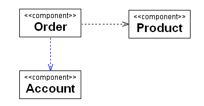

Connecting Dependencies
See Also
You can connect Component elements.
To connect Dependencies:
- In the Modeling Palette, click the Dependency icon
 .
.
- In the Diagram editor, click one of the target Component elements and drag to the other Component.
The IDE connects the two Component elements.

- See Also
- Working With Component Elements and Dependencies
Legal Notices